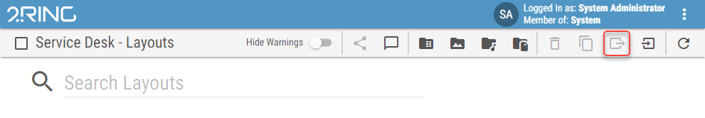
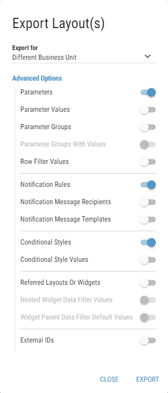
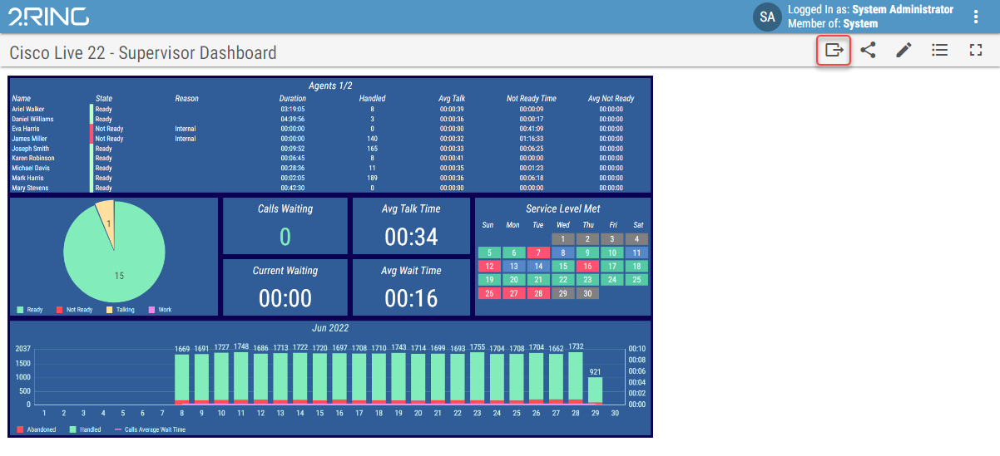
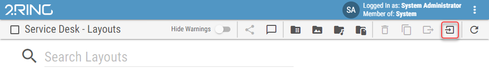
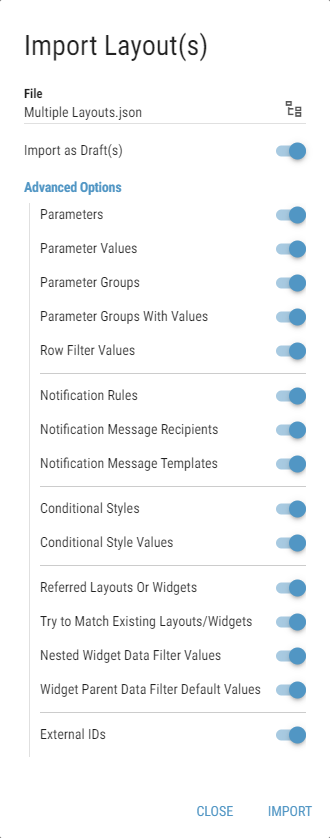

Exporting/Importing Layouts¶
Layouts and Widgets can be easily moved between DW deployments using the export/import functionality.
Examples of widgets are placed in the distribution package in the Assets\Layouts folder after the DW installation.
If a CSV file is used in the widget, a specific CSV file is defined in the widget name. In this case, the CSV file must be uploaded before the widget. For more information see Upload CSV files chapter.
Layouts/Widgets can be exported/imported between DW versions with the same major nad minor number. The last number from the version can differ.
Example:
Layout/Widget from 9.0.3 version can be imported into DW 9.0.1
Layout/Widget from 9.0.3 version can NOT be imported into DW 9.1.0
Layout/Widget from 9.1.0 version can NOT be imported into DW 9.0.1
When using this functionality keep in mind that:
Content files such as images, audio files, pdfs are also not exported. Even though the URL of the file is visible in the editor after the import, the file has to be uploaded or changed in targeted DW deployment.
Themes are also not included in the exported layout. Theme has to be exported and imported into the desired DW instance separately before the layout/widget. Otherwise, default BU theme is used.
Entities which are managed in administration tool and which are used in the exported layout are also imported.
Business unit associated entities (enums and notification message templates) are set as a custom property on the layout entity, unless there is already an entity with the same name/format. In that case, found entity is used in the layout or/and its sources.
Connector associated entities (kpi calculation functions, grid calculation functions, grid calculation function columns etc.) are re-associated based on their name. If entity with the same name is not found in the target DW deployment, assignment is cleared.
Export
Selected layouts/widgets can be exported by clicking on the Export button. When multiple layouts/widgets are selected, they are exported as a single json file.
Figure 1: Export Button
In the following dialog choose, whether the exported layouts will be imported in the same business unit as originals or in different business unit or different DW deployment. Layout entities and properties that will be exported with the layout are dependent on this choice. This can be customized in Advanced Options group.
To export layout/widget, click Export button.
Figure 2: Export Dialog
Parameter Groups
Disabled: Parameter groups configured on the layout entities are cleared.
Enabled: Parameter groups are either matched with existing ones in targeted BU or they are created anew in targeted BU.
Parameter Groups with Values (available only when Parameter Groups property is enabled)
Disabled: Newly created groups are empty.
Enabled: Newly created groups contain same values as groups in original BU.
Referred Layouts Or Widgets
Disabled: Layouts and widgets used in the Nested Layout/Widget segments are NOT included in the export.
Enabled: All layouts and widgets used in the Nested Layout/Widget segments are included in the export.
Currently opened layout can be exported by clicking on the export button in:
layout viewer (published version is exported)
layout editor (current draft version is exported)
Figure 3: Export Button
Import
Exported layout/widget can be imported by clicking on the Import button.
Connector, whose functions are used in the exported layout must be running during the layout import.
Figure 4: Import Button
In the following dialog, choose exported file containing layout(s)/widgets(s) and choose, if they should be imported as drafts.
In the Advanced Options group, entities, that should be imported with the layout/widgets, can be configured.
To import layout/widget, click Import button.
Figure 5: Import Dialog
Parameter Groups
Disabled: Parameter groups configured on the layout entities are cleared.
Enabled: Parameter groups are either matched with existing ones in targeted BU or they are created anew in targeted BU.
Parameter Groups with Values (available only when Parameter Groups property is enabled)
Disabled: Newly created groups are empty.
Enabled: Newly created groups contain same values as groups in original BU.
Referred Layouts Or Widgets
Disabled: Layouts and widgets used in the Nested Layout/Widget segments are NOT imported.
Enabled: All layouts and widgets used in the Nested Layout/Widget segments are imported.